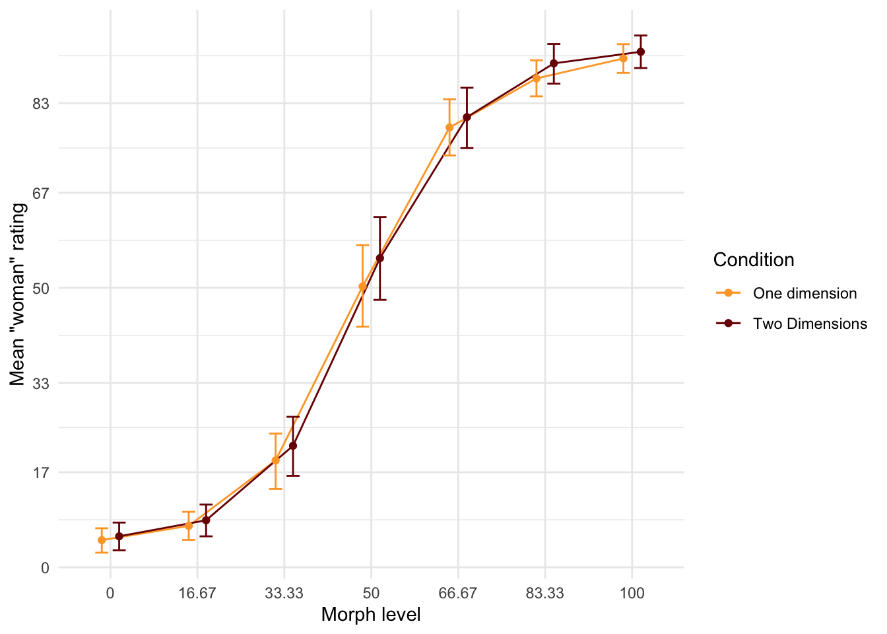

I haven’t changed this in a while Gender categorization - the process through which gender categories are applied to others - is studied almost exclusively by asking participants to respond in terms of woman and men only. This does not capture the diversity of gender which is a problem because it may be inaccurate and it may be harmful to gender diverse individuals. This study (N = ) investigated how more inclusive response options affected gender categorization in terms of options chosen and categorical perception. Participants were more likely to categorize gender beyond the binary when provided with explicit response options, such as “non-binary” and “I don’t know”. Additional responses did not affect categorical perception. The study highlights the importance of careful consideration of response options in gender categorization research.
# Seed for random number generationset.seed(42)knitr::opts_chunk$set(cache.extra = knitr::rand_seed)
Surveys and interviews of transgender and gender diverse (TGD) individuals suggest that many people experience gender as fluid, diffuse, and not bounded by the typical western binary of women and men Hyde et al. (2018). In addition, TGD individuals experience invisibility due to the assumption that there are only two genders and that gender should be visible from someone’s face (Ansara and Hegarty 2014). Research on face perception has typically not taken this gender diversity into account, primarily constructing and measuring gender according to a binary system, although this is beginning to change (ref). Researchers may want to know what happens when gender is measured in inclusive ways, to avoid perpetuating such marginalization and invisibility.
One of the earliest examples of an inclusive attempt to measure gender was the Bem Sex-Role Inventory (BSRI). The BSRI measured gender as a psychological trait and challenged the dichotomous and binary conceptualizations of gender by treating femininity and masculinity as separate constructs (Bem 1974). When gender was measured as a multidmensional construct using the BSRI, most people exhibited a mixture of feminine and masculine traits (Bem 1974). Although Bem primarily measured participants´ own gender, recent recommendations have suggested that this multidimensional approach be used for gender research broadly (Hyde et al. 2018).
More recently, a number of recommendations have been put forward to help researchers measure participants gender identity without excluding TGD people. For example, Saperstein and Westbrook (2021) suggested including a range of categories in addition to “woman” and “man”. In addition, Lindqvist, Sendén, and Renström (2020) suggested including an open text entry where participants can fill in whatever they want. While this practice is not yet the standard, it is increasingly common among researchers to adopt these open-ended approaches to measure participant gender (e.g. Carleton et al. 2022; Cronin et al. 2022; D’Agostino et al. 2022; Göttgens et al. 2022)
However, the majority of recommendations primarily focus on research that measures participants’ self-identified gender identity. This emphasis is understandable as gender identity is a commonly reported demographic variable. That said, self-identified gender identity is only one of many ways that gender can be a target of research. Another common avenue of research on gender is as a social outcome, specifically how people perceive and categorize the gender of faces. It is time to incorporate the recommendations for measuring self-identified gender into research on gender perception and categorization.
Why Should Face Perception Researh Be Beyond the Binary?
Researchers may be reluctant to expand face perception research reason beyond the binary. In particular, researchers who are only interested in categorization of men and women may be concerned that to perception of introduces noise or unpredictability to the data. On the other hand, there are also reasons to suspect that including response options beyond the binary can increase accuracy overall. Indeed, measuring gender categorization using only the categories “woman” and “man” does not accurately reflect the diversity of gender as it is experienced by many people (Hyde et al. 2018). By creating a binary out of a more varying dimension, researchers may be missing an important source of variation, similar to how measurement of age as only “young” or “old” would miss a large source of variation.
Moreover, the inclusion or exclusion of certain response options communicates certain ideas to participants. Asking participants to categorize gender in terms of women and men suggests that women and men are the only two genders, just as asking participants to categorize gender in more inclusive terms suggests that gender is more expansive. Researchers are typically wary of biasing participants, but the biasing effects of gender response options is rarely considered, let alone tested empirically. If a binary construction of gender in research biases participants toward binary thinking, this would require a reexamination of much of the work done in the field of face perception research.
To this point, the phenomenon of categorical perception of faces suggests that participants do have a binary bias in their thinking about gender, at least as it applies to their perception of faces (Campanella, Chrysochoos, and Bruyer 2001). This phenomenon has been observed when participants categorize a number of faces that have been morphed to vary unidimensionally from feminine to masculine. Categorizations of these morphed faces were accentuated towards the dominant gender of the face, so that for example a 60% female morph was rated as a woman by closer to 80% of participants. This accentuation was not observed when the faces were inverted, in which case the the frequency of each gender categorization was much closer to the actual level of morph (see figure 1). If binary response options are biasing participants toward binary option, then non-binary response options may reduce this categorical gender effect. the point I want to make here is that categorical perception can itself be a useful tool for measuring binary bias
In any case, it is becoming increasingly common for perception of gender beyond the binary to be a specific topic of research (My study, Isabelle’s study, others). The study of binary gender perception has a long tradition and there is exists wealth of established methods for carrying out this type of research. The same is not true for non-binary gender perception. As awareness of both the prevalence of and marginalization faced by TGD individuals increases, how people categorize non-binary gender becomes a relevant topic for research in and of itself.
Lastly, aside from any issues of accuracy or interest in research, we most researchers wish to avoid propagating harmful stereotypes. When researchers use a limited number of gender categories, this communicates indirectly that these are the only gender categories that exist (ref). While TGD participants have almost certainly come across this messsage in their daily lives, over time the accumulation of such small messages reinforcing the gender binary can amplify feelings of exclusion.
The present research
The aim of this study is to broadly how various inclusive and non-binary response options affect the perception and categorization of gender of faces. In Study 1 we measured perceptions of gender as a unidimensional and multidimensional construct. We investigated whether the rated gender was accentuated compared to physical of the faces gender (Research Question 1) and whether this accentuation was heightened when gender was measured as unidimensional construct compared to when it was measured as a multidimensional construct (Research Question 2). In Study 2 we measured perceptions of gender measured as discrete categories. We investigated whether and how often participants categorized faces beyond the binary when categorizing faces using inclusive response options (Research Question 3). Additionally, we investigated how inclusive options influenced categorization of faces as women and men (Research Question 4).
Study 1
The pioneering work of Bem (1974) highlighted the possibility of measuring gender as a continuum rather than as discrete categories. Although they were primarily interested in the measurement of participant own gender, more recent recommendations have suggested continuous measurement as suitable method for any measure of gender, including perceptions of gender of others (Hyde et al. 2018). Study 2 explored the use of continuous measurement of gender in terms of two outcomes: a single woman-man continuum and separate man/women continua.
We examined the phenomenon of accentuated gender perception, wherein participants tend to perceive more gender in a face than is actually present. The consequence of this effect is that that participants, when presented with faces displaying subtle gender cues, still categorize them as distinctly female or male For example, a face with 66.66% facial femininity should be perceived as female, while a face with 33.33% facial femininity should be perceived as male. Study 1 examined whether this effect would be observed using a continuous gender rating (Research Question 1). Furthermore, we explored whether employing response options that do not frame women and men as opposites would diminish the accentuated gender perception (Research Question 2).
Method
Participants
Code
# Get subjects informationsubs <- d %>%filter(condition =="md"| condition =="sd" ) %>%mutate(age =as.numeric(Age_1),gender =substr(Gender_1, 1,1) ) %>%count(id, age, gender)
Swedish participants (N = 66) were recruited through advertising online and on the university campus (Mage= 37.36, SDage = 14.14, Range = 18 - 73). Self-identified gender was measured using an open-ended text box; 31 women and 32 men and two participants who did not clearly indicate gender participated. Participants were monetarily compensated for their time. All participants were informed that participation was voluntary and gave written consent to participate in the study in accordance with ethical recommendations. The participants were randomly allocated to conditions.
Design
The experiment used a between-participants design with two response options conditions. These were the unidemnsional, and multidimensional and conditions. The administering researcher was blind to participant condition and participants were randomly allocated into one of the three experimental conditions.
Stimuli
The experiment included faces pfrom the London Face Database (L. M. DeBruine and Jones 2017) and the Chicago Face Database (Ma, Correll, and Wittenbrink 2015) morphed with on Webmorph (L. DeBruine 2018). For Black, Asian and White faces, the six most feminine faces of women and the six most masculine faces of men were selected, using the codebook provided by the researchers. The faces were matched, so that the most feminine faces in the database were morphed with the most masculine faces. The morphs were made in 7 steps, from completely feminine to completely masculine. We defined the morph level as the degree of the the female face present in the morph. In other words, a 33.33% was slightly tilted toward the man, a 50% face was an even mixture and a 100% consisted only of the woman’s face. Because there were 18 pairs morphed in 7 steps, the total number of faces was 126.
include a picture
Procedure
Participants completed the experiment on a computer in a quiet room. Each trial consisted of a face accompanied by the question “How would you gender categorize this person?”. Each person completed a total of 126 trials (i.e. they categorized every face in the stimuli set). Participants were randomly allocated into one of the two response options conditions: single dimension and multiple dimensions(see Figure 1). In the single dimension condition, participants rated gender based on a single continuum with the anchors marked “woman” and “man”. In the multiple dimensions condition, participants rated each face twice on two different continua, ranging from “not woman” or “not man” to “woman” or “man”.
{#fig-exp2-trial
Data analysis
Descriptive statistics were used to summarize the data to highlight, and Bayesian mixed-effects models were used to test research question 4. In all models, morph level and condition were included as fixed effects. Additionally, all models included varying intercepts for both participants and trials and varying slopes for facial femininity. The pattern of scores were clearly non-linear, meaning any linear model would probably be misspecified. Therefore, to reduce the complexity of the model, facial femininity was modelled as an ordered factor with seven levels, corresponding to each of the seven morphing steps. Any accentuation effects should be strongest closest to the midpoint, therefore, we compared the two conditions at Facial Femininity = 33.37 and 66.66, reporting the credible intervals of the difference as well as the Savage-Dickey Bayes factors.
Results
Was gender percieved categorically? (Research Question 3)
We investigated whether participants accentuated gender compared to the physical features of the faces. To answer this question, we visualized responses in Figure@ref(fig:descriptives-two). If participants respond only to the physical properties of faces, the lines should be a straight diagonal. Instead, Figure@ref(fig:descriptives-two) shows that most participants display a non-linear S-shape (see the light lines) and this was indeed also the pattern of the group means in both conditions (see the dark lines). However, the Figure@ref(fig:descriptives-two) also suggests that there was a high degree of individual variation, and some participants were more accentuatethan others in their ratings.
Code
#Visualise means using ggplotsd <- d %>%filter(condition =="md"| condition =="sd") %>%mutate(fem = fem,categorization =as.numeric(categorization) %>%ifelse(scale =="m"| condition =="sd", 100-., .),scale =recode(scale, "1"="Woman - Man", "f"="Not Woman - Woman", "m"="Not Man - Man"),condition =recode(condition, "sd"="Single Dimension", "md"="Multiple Dimensions")) %>%mutate (categorization = categorization )%>%group_by(fem, scale, condition) %>%summarise(mean_rating =mean(categorization), .groups ="drop")f <- d %>%filter(condition =="md"& scale =="f") %>%mutate(fem = fem,categorization =as.numeric(categorization) %>%ifelse(scale =="m"| condition =="sd", 100-., .),scale =recode(scale, "1"="Woman - Man", "f"="Not Woman - Woman", "m"="Not Man - Man"),condition =recode(condition, "sd"="Single Dimension", "md"="Multiple Dimensions")) %>%mutate (categorization = categorization )%>%group_by(fem, scale, condition, id) %>%summarise(mean_rating =mean(categorization), .groups ="drop") m <- d %>%filter(condition =="md"& scale =="m"| condition =="sd") %>%mutate(fem = fem,categorization =as.numeric(categorization) %>%ifelse(scale =="m"| condition =="sd", 100-., .),scale =recode(scale, "1"="Woman - Man", "f"="Not Woman - Woman", "m"="Not Man - Man"),condition =recode(condition, "sd"="Single Dimension", "md"="Multiple Dimensions")) %>%mutate (categorization = categorization )%>%group_by(fem, scale, condition, id) %>%summarise(mean_rating =mean(categorization), .groups ="drop") ggplot(data = sd, aes(x=fem, y=mean_rating, color = scale)) +geom_line(aes(group = scale), linewidth =1)+geom_point(aes(group = scale))+geom_point(data = f, aes(x=fem, y=mean_rating, group = id ), alpha =0.2)+geom_line(data = f, aes(x=fem, y=mean_rating, group = id ), alpha =0.2)+geom_point(data = m, aes(x=fem, y=mean_rating, group = id), alpha =0.2 )+geom_line(data = m, aes(x=fem, y=mean_rating, group = id), alpha =0.2 )+theme_minimal()+facet_wrap(~condition, ncol =1) +scale_x_continuous(breaks =c(0, 17, 33, 50, 67, 83, 100)) +ylab("Mean \"woman\" rating" ) +xlab("Proportion female face in the morph") +scale_color_viridis_d(option ="D", direction =-1)+theme_minimal()
Participant level and mean ratings of faces in Single dimension and multiple dimensions
Code
#Wrangle data againtmp <- d %>%filter(condition =="sd"| condition =="md") %>%mutate(f_rating =as.numeric(categorization) %>%ifelse(scale =="f", ., 100- .),scale_new =ifelse(scale =="f"| scale =="m", scale, "sd"),fem =as.factor(fem)) fit_dimensional_interaction <-brm(f_rating ~0+ fem:condition + (1+ fem|id) + (1+fem|face), family =gaussian(link ='identity'), prior =c(prior(normal(50,50), class ="b"),#prior(normal(50,50), class = "Intercept"),prior(exponential(1), class ="sd"),prior(lkj(1), class ="cor"),prior(exponential(1), class = sigma)),data = tmp,iter =4000, warmup =1000,cores =4,sample_prior =TRUE,file ="models/fit_dimensional_stair_factor.5")# carrying out the hypothesis testh_dim_33 <-hypothesis(fit_dimensional_interaction, "fem33.33:conditionmd= fem33.33:conditionsd" )h_dim_67 <-hypothesis(fit_dimensional_interaction, "fem66.67:conditionmd= fem66.67:conditionsd" )
Is there a difference in accentuated perception by condition? (Research Question 2)
We tested whether this accentuation effect was stronger in the single continuum condition compared to the multiple continua condition. To do this, we modelled the data as bayesian mixed effects models, with each level of facial femininity as a factor. We could also do nonlinear modelling, but I’m not very knowledgable about that If perceptual gender is accentuated compared to physical gender, this effect should be strongest at the between-levels.
Code
# Use brms to sample from posteriorc_eff <-conditional_effects(fit_dimensional_interaction) df <-as.data.frame(c_eff[["fem:condition"]])ggplot(df,aes(x = fem, y=estimate__, group=condition))+geom_line(aes(color=condition), position =position_dodge(0.4)) +geom_point(aes(color=condition), position =position_dodge(0.4))+geom_errorbar(aes(ymin=lower__, ymax=upper__, color = condition), position =position_dodge(0.4), width =0.3) +scale_color_viridis_d(name ="Condition",labels =c("Single Dimension", "Multiple Dimensions"),option ="G",direction =-1,begin=0.7)+ylab("Mean rating" ) +xlab("Facial femininity")+theme_minimal()

Mean gender ratings in Single Dimension and Multiple Dimensions conditions
Therefore, we compared the mean rating at facial femininity = 33.33 and 66.67 morph for both conditions. At facial femininity = 33.33 the evidence strongly suggested that the two conditions were the same (Estimate = -2.63, CI =[-7.93, 2.76], BF01= 17.1). This was also the case at facial femininity = 66.67 (Estimate = -1.79, CI =[-6.31, 2.77], BF01= 23.55). Overall, both conditions showed fairly strong tendencies toward accentuated gender perception and they did not differ in this regard.
Study 2
Study 2 adapted common ways to measure participants categorization of their own gender to other categorization research. One common recommendation is to include a third option gender option, such as “non-binary” or “other”. Another common practice is to give people an open text box in which they may type in whatever they like (Lindqvist, Sendén, and Renström 2020; Saperstein and Westbrook 2021). Therefore, Study 1 compared the standard binary response options to two alternatives: a third gender option (such as ‘non-binary’ or ‘other’) and an open text box for participants to type in their gender. An important difference between self-categorization and the categorization of others is that most people know their own gender, whereas the gender of others cannot always be known from appearance (Richards et al. 2016). To account for this, we also gave participants the ability to state that gender was unknown.
Method
Participants
Code
# Get subjects informationsubs <- d %>%filter(condition =="ft"| condition =="xb"| condition =="mc") %>%mutate(age =as.numeric(Age_1),gender =substr(Gender_1, 1,1) ) %>%count(id, age, gender)
Swedish participants (N = 100) were recruited through advertising online and on the university campus (Mage= 37.16, SDage = 13.89, Range = 18 - 69). Self-identified gender was measured using an open-ended text box as recommended by Lindqvist, Sendén, and Renström (2020); participants were 56 women, 47 men and 2 who did not indicate gender). All participants were informed that participation was voluntary, that they could withdraw from the study and that results do no include any identifying features. The study was approved by the Stockholm University Ethical Review board. All participants provided written informed consent.
Design
The experiment used a between-participants design with three response options conditions. These were the binary categories, multiple categories and free text and conditions. The administering researcher was blind to participant condition and participants were randomly allocated into one of the three experimental conditions.
Stimuli and Procedure
The stimuli and procedure were in Study 2 were identical to those of Study 1, apart from the response options. Participants were randomly allocated into one of the three response options conditions: binary categories, multiple categories, and free text (see Figure 1). In the binary categories condition, participants were only given the options to respond “woman” or “man”. The multiple categories condition included the options “other” and “I don’t know” as well as woman or man. The free text condition consisted of an open text box.
Figure 1: Sample trial from each of the three conditions
Measures
The primary outcome was responses to the categorization task. For analysis purposes, these were aggregated in the following ways:
Beyond-binary categorizations represented the categories where participants did not categorize the face as woman or man. This was a dichotomous variable that was calculated from the categorization data by combining the responses of “I don’t know” and “other” in the multiple categories condition. In the free text condition, this included various variations of “other” and “non-binary”. These beyond-binary responses were coded as 1 and binary responses as 0.
Binary categorization represented only the responses that were either woman (coded as 1) or man (coded as 0). All other responses were removed from this dataset.
Data analysis
We used R (Version 4.2.2; R Core Team 2022) and the R-packages brms(Version 2.18.0; Bürkner 2017, 2018, 2021), papaja(Version 0.1.1; Aust and Barth 2022), and tidyverse(Version 1.3.2; Wickham et al. 2019). Additionally, much of the R code was adapted from Kurz (2023) . Descriptive statistics were used to summarize the data, and Bayesian mixed-effects models were used to test research questions 2. In all models, facial femininity and condition were included as fixed effects. Additionally, all models included varying intercepts for both participants and trials and varying slopes for facial femininity. To answer each research question, we used a two-step approach which began with a model comparison approach followed by Bayes factor tests of specific contrasts.
Results
How does inclusive response options affect categorizations beyond the binary (Research Question 3)
Group-level categorizations
The raw distribution of gender categorizations made by participants is presented in Figure @ref(fig:descriptives).
Code
# make figure 1d %>%mutate(fem = fem ) %>%filter(condition =="ft"| condition =="xb"| condition =="mc") %>%#select correct conditionsgroup_by(fem, race, condition) %>%mutate(categorization =recode(categorization, #yes, this is pretty horrendous code, I haven't had a chance to sit down and clean it up yet."1"="Woman", "Woman"="Woman", "wman"="Woman", "woman"="Woman", "female"="Woman", "Female "="Woman", "Female"="Woman", "Fenale"="Woman", "women"="Woman", "woman "="Woman", "femLE"="Woman", "FEmale"="Woman", "Femalw"="Woman", "Fwmalw"="Woman", "Female "="Woman", "woman"="Woman", "Woman"="Woman", "feMale"="Woman", "fermale"="Woman", "wman"="Woman", "Femae"="Woman", "f"="Woman", "F"="Woman", "female "="Woman","2"="Man", "man"="Man","Male"="Man", "male"="Man", " Male"="Man", "M"="Man", "nmale"="Man", "male "="Man", "nale"="Man", "ale"="Man", "M"="Man", "m"="Man", "MALE"="Man","3"="Other", "Nonbinary"="Other", "Non Binary "="Other", "Non binary "="Other", "nonbinary"="Other", "4"="Don't know" ),condition =recode(condition, "ft"="Free text", "xb"="Binary Categories", "mc"="Multiple Categories"))%>%count(categorization) %>%filter(!is.na(categorization))%>%ggplot(aes(x=fem, y=n, fill=factor(categorization, levels =c("Man", "Other", "Don't know", "Woman")))) +geom_bar(stat="identity", position ="fill") +ggtitle("Gender Categorizations by Participants")+facet_wrap(~condition) +scale_x_continuous(breaks =c(0, 17, 33, 50, 66, 83, 100)) +ylab("Proportion of responses" ) +xlab("Facial Femininity") +#scale_fill_discrete(name = "Response") +#scale_fill_viridis_d(name = "Response")scale_fill_viridis_d( name ="Response", direction =1, begin =0.1, end =0.6)+geom_hline(yintercept=0.50, linetype="dashed", color ="red")+theme_minimal()
Gender Categorizations by Participants
Individual-level categorizations
We investigated whether participants categorized faces beyond the binary when given the option to do so (Research Question 1). To do this, we plotted the distribution of categorizations for each participant (see Figure@ref(fig:descriptives).)
Even when participants had the option to categorize face beyond the binary, most still categorized faces as women and men. In the free text condition, only one participant categorized a single face as other than woman and man. In the multiple categories condition, around half of participants categorized any face beyond the binary see figure XX. Even among participants who categorized any faces beyond the binary, there was a great deal of variation in tendency to use these categories (see figure 3)
here are two version of the same figure. I don’t quite understand why the numbers don’t add up though. I’ll have to do some more digging in the code.
Code
#create dataframe with only free text and multiple categories conditions #Well, fist, first I wrangle datatmp <- d %>%filter(condition =="mc"| condition =="ft") %>%mutate(categorization =recode(categorization, #yes, this is pretty horrendous code, I haven't had a chance to sit down and clean it up yet."1"="Woman", "Woman"="Woman", "wman"="Woman", "woman"="Woman", "female"="Woman", "Female "="Woman", "Female"="Woman", "Fenale"="Woman", "women"="Woman", "woman "="Woman", "femLE"="Woman", "FEmale"="Woman", "Femalw"="Woman", "Fwmalw"="Woman", "Female "="Woman", "woman"="Woman", "Woman"="Woman", "feMale"="Woman", "fermale"="Woman", "wman"="Woman", "Femae"="Woman", "f"="Woman", "F"="Woman", "female "="Woman","2"="Man", "man"="Man","Male"="Man", "male"="Man", " Male"="Man", "M"="Man", "nmale"="Man", "male "="Man", "nale"="Man", "ale"="Man", "M"="Man", "m"="Man", "MALE"="Man","3"="Other", "Nonbinary"="Other", "Non Binary "="Other", "Non binary "="Other", "nonbinary"="Other", "Non binary"="Other", "non binary"="Other", "unisex"="other", "4"="Don't know" ) )%>%mutate(bbcat =ifelse(categorization =="Other"|categorization =="Don't Know", 1, 0),fem =as.factor(fem))
Code
library(gridExtra)
Attaching package: 'gridExtra'
The following object is masked from 'package:dplyr':
combine
Categorization of women and men (Research Question 3)
We investigated inclusive response options changed participants overall tendency to categorize women and men. This could happen if, for example, more masculine faces tended to be categorized as non-binary.
This was tested by fitting a Bayesian mixed effects model to the data. In addition to random intercepts for participants and random slopes for facial femininity, the model included a fixed effect of condition, and unique slopes of facial femininity for each condition.
Participants categorized slightly more faces as women in the multiple categories condition than in the binary categories condition, but this difference is probably due noise, as there was moderate evidence that the two conditions were the same (OR = 0.68, CI =[0.4, 1.17], BF01= 5.83). Participants categorized faces as women almost equally often in the free text and binary categories conditions and there was strong evidence that the two conditions were the same (OR = 1.03, CI =[0.6, 1.78], BF01= 15.42). In other words, neither the free text or the multiple categories condition changed the pattern of categorization of women and men compared to the binary categories condition.
Second, we compared the relationship between facial femininity and woman categorizations (i.e. the slope of facial femininity) across the conditions. The effect of facial femininity on woman categorizations was almost exactly the same in the multiple categories and binary categories, as there was overwhelming evidence in favor of no difference (Difference = 0, CI =[-0.02, 0.03], BF01= 398.85). The effect of facial femininity on woman categorizations almost was exactly the same in the free text and binary categories, as there was overwhelming evidence in favor of no difference ((Difference = 0, CI =[-0.02, 0.02], BF01= 398.85) )
This figure isn’t referenced in the paper yet. And it’s still a work in progress.
Code
# make figure 1ft <-d %>%mutate(id =factor(id) ) %>%filter(condition =="ft") %>%#select correct conditionsgroup_by( id) %>%mutate(categorization =recode(categorization, #yes, this is pretty horrendous code, I haven't had a chance to sit down and clean it up yet."1"="Woman", "Woman"="Woman", "wman"="Woman", "woman"="Woman", "female"="Woman", "Female "="Woman", "Female"="Woman", "Fenale"="Woman", "women"="Woman", "woman "="Woman", "femLE"="Woman", "FEmale"="Woman", "Femalw"="Woman", "Fwmalw"="Woman", "Female "="Woman", "woman"="Woman", "Woman"="Woman", "feMale"="Woman", "fermale"="Woman", "wman"="Woman", "Femae"="Woman", "f"="Woman", "F"="Woman", "female "="Woman","2"="Man", "man"="Man","Male"="Man", "male"="Man", " Male"="Man", "M"="Man", "nmale"="Man", "male "="Man", "nale"="Man", "ale"="Man", "M"="Man", "m"="Man", "MALE"="Man","3"="Other", "Nonbinary"="Other", "Non Binary "="Other", "Non binary "="Other", "nonbinary"="Other", "Non binary"="Other", "non binary"="Other", "unisex"="other", "4"="Don't know" ),condition =recode(condition, "ft"="Free text", "xb"="Binary Categories", "mc"="Multiple Categories"))%>%filter(id !=124) %>%filter(categorization =="Woman"|categorization =="Man") %>%count(categorization) %>%# arrange(n) %>% group_by(categorization) %>%filter(!is.na(categorization)) %>%arrange(categorization, desc(n)) %>%mutate(id =factor(id, levels =unique(id))) %>%ggplot(aes(x=id, y=n, fill=factor(categorization, levels =c("Man", "Other", "Don't know", "Woman")))) +geom_bar(stat="identity", position ="fill") +#ggtitle("Gender Categorizations by Participants")+#scale_x_continuous(breaks =c(0, 17, 33, 50, 66, 83, 100)) +ylab("Proportion of responses" ) +xlab("id") +#scale_fill_discrete(name = "Response") +#scale_fill_viridis_d(name = "Response")#scale_fill_grey( name = "Response")+coord_flip()+theme_minimal()+theme(legend.position ="none")mc <-d %>%mutate(id =factor(id) ) %>%filter(condition =="mc") %>%#select correct conditionsgroup_by( id) %>%mutate(categorization =recode(categorization, #yes, this is pretty horrendous code, I haven't had a chance to sit down and clean it up yet."1"="Woman", "Woman"="Woman", "wman"="Woman", "woman"="Woman", "female"="Woman", "Female "="Woman", "Female"="Woman", "Fenale"="Woman", "women"="Woman", "woman "="Woman", "femLE"="Woman", "FEmale"="Woman", "Femalw"="Woman", "Fwmalw"="Woman", "Female "="Woman", "woman"="Woman", "Woman"="Woman", "feMale"="Woman", "fermale"="Woman", "wman"="Woman", "Femae"="Woman", "f"="Woman", "F"="Woman", "female "="Woman","2"="Man", "man"="Man","Male"="Man", "male"="Man", " Male"="Man", "M"="Man", "nmale"="Man", "male "="Man", "nale"="Man", "ale"="Man", "M"="Man", "m"="Man", "MALE"="Man"),condition =recode(condition, "ft"="Free text", "xb"="Binary Categories", "mc"="Multiple Categories"))%>%filter(id !=124|84) %>%filter(categorization =="Woman"|categorization =="Man") %>%count(categorization) %>%# arrange(n) %>% group_by(categorization) %>%filter(!is.na(categorization)) %>%arrange(categorization, desc(n)) %>%mutate(id =factor(id, levels =unique(id))) %>%ggplot(aes(x=id, y=n, fill=factor(categorization, levels =c("Man", "Other", "Don't know", "Woman")))) +geom_bar(stat="identity", position ="fill") +#ggtitle("Gender Categorizations by Participants")+#scale_x_continuous(breaks =c(0, 17, 33, 50, 66, 83, 100)) +ylab("Proportion of responses" ) +xlab("id") +#scale_fill_discrete(name = "Response") +#scale_fill_viridis_d(name = "Response")#scale_fill_grey( name = "Response")+coord_flip()+theme_minimal()+theme(legend.position ="none")xb <-d %>%mutate(id =factor(id) ) %>%filter(condition =="xb") %>%#select correct conditionsgroup_by( id) %>%mutate(categorization =recode(categorization, #yes, this is pretty horrendous code, I haven't had a chance to sit down and clean it up yet."1"="Woman", "Woman"="Woman", "wman"="Woman", "woman"="Woman", "female"="Woman", "Female "="Woman", "Female"="Woman", "Fenale"="Woman", "women"="Woman", "woman "="Woman", "femLE"="Woman", "FEmale"="Woman", "Femalw"="Woman", "Fwmalw"="Woman", "Female "="Woman", "woman"="Woman", "Woman"="Woman", "feMale"="Woman", "fermale"="Woman", "wman"="Woman", "Femae"="Woman", "f"="Woman", "F"="Woman", "female "="Woman","2"="Man", "man"="Man","Male"="Man", "male"="Man", " Male"="Man", "M"="Man", "nmale"="Man", "male "="Man", "nale"="Man", "ale"="Man", "M"="Man", "m"="Man", "MALE"="Man","3"="Other", "Nonbinary"="Other", "Non Binary "="Other", "Non binary "="Other", "nonbinary"="Other", "Non binary"="Other", "non binary"="Other", "unisex"="other", "4"="Don't know" ),condition =recode(condition, "ft"="Free text", "xb"="Binary Categories", "mc"="Multiple Categories"))%>%filter(id !=124| id !=84) %>%count(categorization) %>%# arrange(n) %>% group_by(categorization) %>%filter(!is.na(categorization)) %>%arrange(categorization, desc(n)) %>%mutate(id =factor(id, levels =unique(id))) %>%ggplot(aes(x=id, y=n, fill=factor(categorization, levels =c("Man", "Other", "Don't know", "Woman")))) +geom_bar(stat="identity", position ="fill") +#ggtitle("Gender Categorizations by Participants")+#scale_x_continuous(breaks =c(0, 17, 33, 50, 66, 83, 100)) +ylab("Proportion of responses" ) +xlab("id") +#scale_fill_discrete(name = "Response") +#scale_fill_viridis_d(name = "Response")#scale_fill_grey( name = "Response")+coord_flip()+theme_minimal()+theme(legend.position ="none")
Experiment 1 indicated that participants categorize beyond the binary when response options include more options than women and men only. However, the free text option did not differ from the binary option. Thus, the written out choices seem to act as reminders to participants. Furthermore, categorization beyond the binary affected former man and women responses to similar degrees, meaning that the ratio of women and men categorizations was still about 50/50. This did not systematically affect their overall pattern of responses in terms of woman and man categorizations.
Discussion
Study 2 showed that participants exhibited signs of accentuated gender perception when rating faces in terms of gender. Additionally, this did not depend on response option condition; response options which did not present women and men as opposing categories led to an equal amount of accentuated perception as response options that did. Indeed a highly binary view of gender was present and participants treated womanhood and manhood as opposites even the scale would allow them to be more flexible.
General discussion
In two experiments, we tested how response options in gender categorization of others influence gender categorization and accentuated perception of gender. The results suggested that about half of participants categorized gender beyond the binary when presented with non-binary alternatives in a forced choice selection, but that almost none do it when using a free text response (Research Question 1). The results also suggested the presence of non-binary alternatives did not meaningfully bias categorizations of women and men (Research Question 2). Furthermore, when participants rated gender on a continuum, there was still a tendency toward accentuated perception of gender, though not for every participant (Research Question 3). Lastly, participants exhibited similar levels of accentuated gender for continua which did and did not imply that women and men are opposites (Research Question 4).
The finding that participants use non-binary response options are somewhat consistent with previous research, such as the work of Saperstein and Westbrook (2021) and Lindqvist, Sendén, and Renström (2020), which has shown that including flexible response options allow participants to better express themselves. Unlike the literature on self-categorization, increased freedom did not increase the gender diversity of participants’ categorizations, rather explicit reminders seem to have the largest effect.
When participants categorized women or men on continuous scales, the results differ from Bem (1974) who found that participants categorize their own femininity and masculinity independently of each other. Rather, when categorizing others, the participants in the present study seemed to treat women and men as opposites, even when the response options did not pose them as such. Both of these deviations from the previous literature likely stem from the substantial difference between indicating one’s own gender and categorizing that of others.
It is worth noting that this study only examined participants’ stated categorizations, and it is possible that they may have made other categorizations internally that were not reflected in their responses. However, it is important to recognize that a purely behavioral study such as this cannot fully capture the neurological processes underlying gender perception, which may require more sophisticated techniques such as EEG and eye-tracking (Kloth, Schweinberger, and Kovács 2010; Stolier and Freeman 2017).
In this study we aggregated responses that did not indicate woman or man. In the multiple response option condition, both “I don’t know” and “Non-binary” were included as a beyond binary categorization. We justified this on the basis that what we were interested in is any categorization beyond the binary. However, these two options are not the same. Furthermore, it is important to note that no matter how a person looks, it is impossible to know their binary or non-binary gender identity (Richards et al. 2016). Therefore, if a person aims to be inclusive and not categorize in a binary way, then abstaining from categorizing, for example by selecting “I don’t know” is always the best option.
In the introduction we raised the possibility that findings within gender categorization research may be biased from a sole reliance on binary response options. Based on the present results, this seems unlikely. Instead, it seems that the societal norm to treat gender as binary is the strongest determinant participants gender categorizations. Even so, we recommend researchers to carefully consider their measurements of gender categorization. Open text-boxes, forced choice-alternatives and continua are all viable alternatives. Even researchers who are primarily interested in binary categorizations should consider including beyond-binary alternatives, to avoid perpetuating the binary gender norm and to accurately represent the diversity of gender.
Conclusion
In two experiments we tested how different response alternatives affected gender categorizations. Participants were more likely to categorize faces beyond the binary when using a forced-choice paradigm including “non-binary” and “I don’t know” than when using a free text option, or slider scales. In comparison to self-identification questions where open ended responses are seen as the most inclusive alternative (Lindqvist, Sendén, and Renström 2020), categorization of others benefit from response options that explicitly reminds participants that not all people identify as women or men.
References
Ansara, Y Gavriel, and Peter Hegarty. 2014. “Methodologies of Misgendering: Recommendations for Reducing Cisgenderism in Psychological Research.”Feminism & Psychology 24 (2): 259–70. https://doi.org/10.1177/0959353514526217.
Aust, Frederik, and Marius Barth. 2022. papaja: Prepare Reproducible APA Journal Articles with R Markdown. https://github.com/crsh/papaja.
Bem, Sandra L. 1974. “THEMEASUREMENTOFPSYCHOLOGICALANDROGYNY,” 8.
Bürkner, Paul-Christian. 2017. “brms: An R Package for Bayesian Multilevel Models Using Stan.”Journal of Statistical Software 80 (1): 1–28. https://doi.org/10.18637/jss.v080.i01.
———. 2021. “Bayesian Item Response Modeling in R with brms and Stan.”Journal of Statistical Software 100 (5): 1–54. https://doi.org/10.18637/jss.v100.i05.
Campanella, S., A. Chrysochoos, and R. Bruyer. 2001. “Categorical Perception of Facial Gender Information: Behavioural Evidence and the Face-Space Metaphor.”Visual Cognition 8 (2): 237–62. https://doi.org/10.1080/13506280042000072.
Carleton, R. Nicholas, Michelle McCarron, Gregory P. Krätzig, Shannon Sauer-Zavala, J. Patrick Neary, Lisa M. Lix, Amber J. Fletcher, et al. 2022. “Assessing the Impact of the Royal Canadian Mounted Police (RCMP) Protocol and Emotional Resilience Skills Training (ERST) Among Diverse Public Safety Personnel.”BMC Psychology 10 (1): 295. https://doi.org/10.1186/s40359-022-00989-0.
Cronin, Katherine A., Maureen Leahy, Stephen R. Ross, Mandi Wilder Schook, Gina M. Ferrie, and Andrew C. Alba. 2022. “Younger Generations Are More Interested Than Older Generations in Having Non-Domesticated Animals as Pets.” Edited by Simon Clegg. PLOSONE 17 (1): e0262208. https://doi.org/10.1371/journal.pone.0262208.
D’Agostino, Maria, Helisse Levine, Meghna Sabharwal, and Al C Johnson-Manning. 2022. “Organizational Practices and Second-Generation Gender Bias: A Qualitative Inquiry into the Career Progression of u.s. State-Level Managers.”The American Review of Public Administration 52 (5): 335–50. https://doi.org/10.1177/02750740221086605.
Göttgens, Irene, Sirwan K. L. Darweesh, Bastiaan R. Bloem, and Sabine Oertelt-Prigione. 2022. “The Impact of Multiple Gender Dimensions on Health-Related Quality of Life in Persons with Parkinson’s Disease: An Exploratory Study.”Journal of Neurology 269 (11): 5963–72. https://doi.org/10.1007/s00415-022-11228-2.
Hyde, Janet Shibley, Rebecca S. Bigler, Daphna Joel, Charlotte Chucky Tate, and Sari M. van Anders. 2018. “The Future of Sex and Gender in Psychology: Five Challenges to the Gender Binary.”American Psychologist, July. https://doi.org/10.1037/amp0000307.
Kloth, Nadine, Stefan R. Schweinberger, and Gyula Kovács. 2010. “Neural Correlates of Generic Versus Gender-Specific Face Adaptation.”Journal of Cognitive Neuroscience 22 (10): 2345–56. https://doi.org/10.1162/jocn.2009.21329.
Lindqvist, Anna, Marie Gustafsson Sendén, and Emma A. Renström. 2020. “What Is Gender, Anyway: A Review of the Options for Operationalising Gender.”Psychology & Sexuality, February, 1–13. https://doi.org/10.1080/19419899.2020.1729844.
Ma, Debbie S., Joshua Correll, and Bernd Wittenbrink. 2015. “The Chicago Face Database: A Free Stimulus Set of Faces and Norming Data.”Behavior Research Methods 47 (4): 1122–35. https://doi.org/10.3758/s13428-014-0532-5.
R Core Team. 2022. R: A Language and Environment for Statistical Computing. Vienna, Austria: R Foundation for Statistical Computing. https://www.R-project.org/.
Richards, Christina, Walter Pierre Bouman, Leighton Seal, Meg John Barker, Timo O Nieder, and Guy T’Sjoen. 2016. “Non-Binary or Genderqueer Genders.”Int Rev Psychiatry . 28(1): 95–102.
Saperstein, Aliya, and Laurel Westbrook. 2021. “Categorical and Gradational: Alternative Survey Measures of Sex and Gender.”European Journal of Politics and Gender 4 (1): 11–30. https://doi.org/10.1332/251510820X15995647280686.
Stolier, Ryan M., and Jonathan B. Freeman. 2017. “A Neural Mechanism of Social Categorization.”The Journal of Neuroscience 37 (23): 5711–21. https://doi.org/10.1523/JNEUROSCI.3334-16.2017.
Wickham, Hadley, Mara Averick, Jennifer Bryan, Winston Chang, Lucy D’Agostino McGowan, Romain François, Garrett Grolemund, et al. 2019. “Welcome to the tidyverse.”Journal of Open Source Software 4 (43): 1686. https://doi.org/10.21105/joss.01686.
 {#fig-exp2-trial
{#fig-exp2-trial